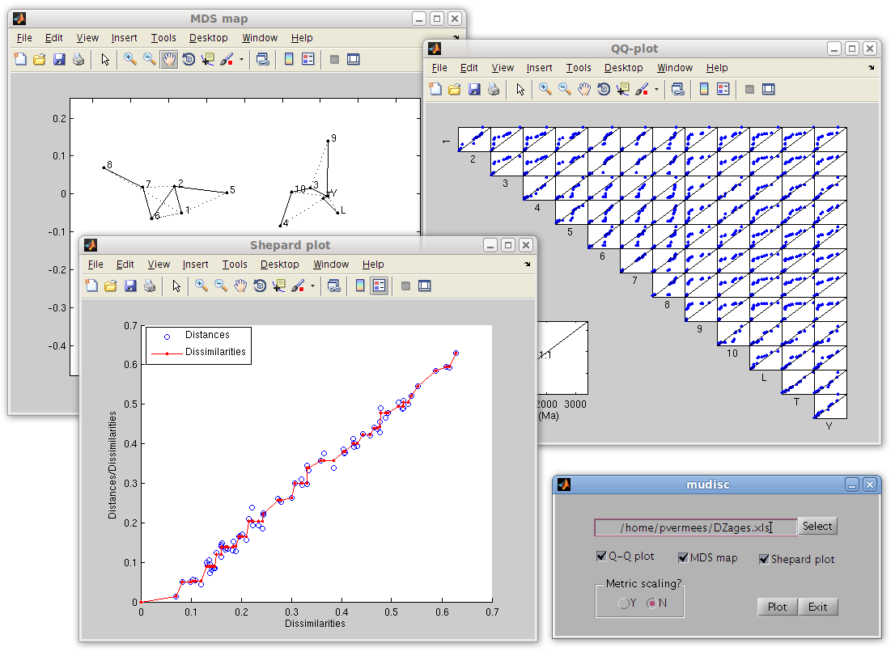
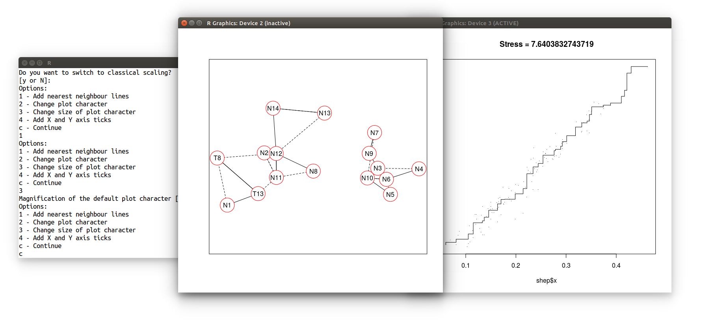

<html>
<script src="../run_prettify.js"></script>
<script src="../lang-r.js"></script>
<title>
Multi-Dimensional Scaling of detrital age distributions
</title>
  <link href="../mystyle.css" rel="stylesheet" type="text/css"/> 
</html>
<body>
<div class="main">
<center>
<h2>MuDiSc: <u>Mu</u>lti-<u>Di</u>mensional <u>Sc</u>aling with <tt>Matlab</tt> and <tt>R</tt></h2>
</center>

An increasing number of detrital zircon provenance studies are based
on not just a few but many samples.  This trend is likely to continue
as the price of zircon U-Pb analyses continues to drop.  The large
datasets resulting from such studies call for a dimension-reducing
technique such as Multi-Dimensional Scaling (MDS). Given a
dissimilarity matrix (i.e., a table of pairwise distances), MDS
constructs a 'map' on which 'similar' samples cluster closely together
and 'dissimilar' samples plot far apart.  This website presents some
software tools for MDS analysis in the context of detrital
geochronology, using the two-sample Kolmogorov-Smirnov statistic as a
dissimilarity metric.  Two alternative sets of tools are presented
here, written in <tt>Matlab</tt> (<a href="#matlab">Section 1</a>) and
<tt>R</tt> (<a href="#R">Section 2</a>). Further detail about these
methods is provided in an accompanying paper:

<p></p>
<a href="../papers/VermeeschChemGeol2013" style="text-decoration:none;">
<div style="border:1px solid black;">
Vermeesch, P., 2013, Multi-sample comparison of detrital age distributions. 
Chemical Geology, v.341, 140-146. doi:10.1016/j.chemgeo.2013.01.010.</div>
</a>

<h4>
<a name="matlab">1. A user-friendly Matlab-GUI:</a></h4>

<div class="separator" style="clear: both; text-align: center;">
<a href="MuDiSc.png" imageanchor="1" style="margin-left: 1em; margin-right: 1em;"></a></div>
<br />
<table style="background-color: cyan; border-width: 0; margin-left: auto; margin-right: auto;">
<tbody>
<tr><td>Downloads:<br />
-&nbsp;<a href="http://ucl.ac.uk/~ucfbpve/software/MuDiSc.zip">MuDiSc.zip</a> - a Matlab GUI to generate MDS and QQ plots&nbsp;of detrital age distributions.<br />
-&nbsp;<a href="http://ucl.ac.uk/~ucfbpve/software/DZages.xls">DZages.xls</a> - example input file for MuDiSc containing the U-Pb dataset from China.</td>
</tr>
</tbody></table>

<h4><a name="R">2. MDS (and more!) with the <tt>provenance</tt> package in <tt>R</tt>:</a></h4>

<div class="separator" style="clear: both; text-align: center;">
<a href="provenance.png" imageanchor="1" style="margin-left: 1em; margin-right: 1em;">
</a></div>
<br />

The <tt>DZages.Rdata</tt> dataset needed to run the example code in
the <i>Chemical Geology </i> paper can be downloaded from the bottom
of this page. However, for practical purposes, it is more convenient
to use the newly released <tt>provenance</tt> package. In addition to
ordinary Multidimensional Scaling of detrital zircon age
distributions, this package performs a host of other tasks as well,
including MDS/PCA analysis of compositional data such as heavy mineral
counts, Procrustes Analysis and 3-way MDS, and data visualisation as
Kernel Density Estimates, Cumulative Age Distributions, pie charts and
ternary diagrams. For further details about this comprehensive
toolbox, see <a href="http://provenance.london-geochron.com">
http://provenance.london-geochron.com</a>.

<p></p>

<table style="background-color: cyan; border-width: 0; margin-left: auto; margin-right: auto;">
<tbody>
<tr><td>Downloads:<br />
-&nbsp;<a href="http://ucl.ac.uk/~ucfbpve/software/DZages.Rdata">DZages.Rdata</a>&nbsp;- input data for the R code in the paper<br />
-&nbsp;<a href="http://ucl.ac.uk/~ucfbpve/software/DZages.csv">DZages.csv</a>&nbsp;- .csv-file with the same data<br />
-&nbsp;<a href="http://ucl.ac.uk/~ucfbpve/software/HMdata.csv">HMdata.csv</a>&nbsp;- .csv-file with the heavy mineral data<br />
-&nbsp;<a href="http://ucl.ac.uk/~ucfbpve/software/BigData.Rdata">BigData.Rdata</a>&nbsp;- 5-proxy dataset from Namibia<br />
</td>
</tr>
</tbody></table>

</td>
</tr>
</tbody></table>

<script language="javascript" type="text/javascript">
var sc_project=2277130; 
var sc_invisible=1; 
var sc_partition=20; 
var sc_security="1b48b58b"; 
</script>

<script language="javascript" src="http://www.statcounter.com/counter/counter.js" type="text/javascript"></script>

<noscript><a href="http://www.statcounter.com/" target="_blank">
</a></noscript>

</body>
